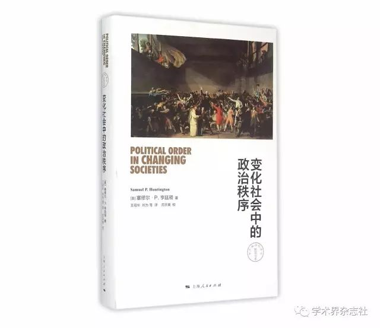

回到亨廷顿的福山——从保守主义到保守的自由主义
收录于合集
在第三波民主化浪潮中，东欧剧变、苏联解体，90余个发展中国家和地区加入政治转型的大潮，向自由民主政体敞开怀抱。在理论界，挟冷战胜利余威的“历史终结论”则甚嚣尘上。在福山看来，西方文明在由传统社会向现代社会演进的历史是一部普遍史，发展中国家的现代化也必然要走这一条路，人类社会将终结于自由民主制。因此，政治发展的过程并不重要，因为经济社会转型将自然地推动政治民主化的发生，眼下的第三波民主化便是结构性的自然转变。“历史终结论”的提出，不仅使得自由民主成为西方在冷战后继续推行的意识形态，而且直接导致了“民主革命”成为西方国家的对外政策。然而通过30多年来的跟踪观察，第三波民主化非但没有使拥抱自由民主制的发展中国家与发达国家并驾齐驱，不但在实践中出现了“三大悖论”，而且出现了治理能力低下的困境，甚至因为政治制度脆弱崩解而陷入失败国家的深渊，使得世界政治的民主化长期陷入低质量的停滞状态，消弭所有试图深化改革的可能，乃至滑向“民主衰退”。
事实上，民主化理论对于作为结果性理论的自由民主的过度迷信，使其必然忽视了作为过程性结构的历史、社会、文化条件，从而出现转型国家的危机，这迫使福山重视起在政治发展逻辑中的“时间性”问题。在近著《政治秩序的起源》中，福山表示自己回到了亨廷顿在《变化社会中的政治秩序》一书中对政治发展的“时间性”分析，因而强调国家—法治—民主问责制的政治发展序列成了近年来福山一以贯之的路径。
一、回到亨廷顿理论中的“时间性”
高度关注政治发展中的过程性结构，对政治发展诸变量之间排列的重视以及从“时间性”维度考察事件发展的历史轨迹，是历史制度主义分析的主要范式。在此之前，其他学派在探讨政治秩序演进的逻辑时也不同程度地涉及“时间性”这一概念，比如亨廷顿在其不败的经典《变化社会中的政治秩序》中对政治发展的时间性分析。

二战的结束致使世界资本主义殖民体系走向全面崩溃，新兴国家纷纷登上历史舞台，开启了新一轮的现代化浪潮。当时西方普遍流行的乐观主义认为，发展中国家只要经济发展了，就自然能转型为以美国西欧为代表的现代国家。经济发展带来民主的思维方式不仅成为一种“路径依赖”，而且一度成为美国决策部门对外援助的意识形态和理论基础。然而事实真是如此吗？对于广大发展中国家来说，经济发展带来的却是政治动乱。对此，亨廷顿提出了一条迥异于经典现代化理论的政治分析路径。在他看来，对更多发展中地区而言，有关动荡、腐败、威权主义、国内暴力、制度衰败及政治崩溃的理论才能够解释这些现状。
事实上，对较晚进行现代化的社会而言，若要变更传统的社会势力、利益、习惯和根深蒂固的制度，必须首先进行集权。发展中国家的政府正是因为缺少权威，才容易受到知识分子、军官、学生等社会各个势力的摆布，既缺乏自主性也无法实现公共利益。同时，摧毁盘根错节的传统权益还需要动员并吸纳社会中新的政治力量参与政治。另一方面，由政治现代化带来的经济发展加剧了政治不平等而社会动员削弱此等不平等的合法性，二者的结合便产生了政治动乱。因此，政治相对于社会经济发展的自主性决定了现代政治秩序并不会在传统社会裂变中自发地产生，政治机构必须随着日益分化、变得盘根错节的社会势力而作出相应调整，变得更加复杂化、权威化和制度化，建立“明确而稳定的制度化权威结构”——公民政体适应政治参与。反之，在没有集权创建强有力的政治制度之前扩大政治参与则会出现普力夺政体，加速内乱，导致政治衰败。
因此，当发展中国家在经济社会现代化、大众参与、政治发展之间“难以抉择”时，应当首先集中建立起统一有效的政治权威。使政治制度化水平能适应大众参与水平，进而形成政治秩序，保持政治稳定，才能助益政治发展。因此，从“时间性”的分析维度出发，亨廷顿认为对发展中国家的现代化进程来说最好的选择是按照“权威—秩序—发展”这一路径，这也成为后来福山“制度三支柱”理论的模板。
亨廷顿批判了现代化理论中的“相容性假说”，指出“现代化中的好事并不总是一起到来”，福山也承认政治发展的各方面并非一蹴而就。历史的行程总有其惯性，发达国家在现代化进程中面临的困境如今在转型国家中再次上演。大部分发展中国家在民主转型中非但没有实现政治发展，反而导致治理失效乃至国家失败。这些促使福山认识到“软弱制度和没有制度的国家，不管走不走现代化道路，都会摇摇欲坠”。因此，福山首先在名为《国家构建：21世纪的国家治理与世界秩序》的研究报告中指出，对大多数发展中国家来说，政府承担核心职能的基础建立在强大的国家之上，强化国家制度建设是当务之急。随后福山相继在《政治秩序的起源》和《政治秩序与政治衰败》两本近著中通过比较历史分析的方法对政治发展的逻辑做了进一步探讨，提出构成现代政治秩序的“制度三支柱”即强大国家、法治与问责制政府，并指出这三种制度并非同时发生，而是有次序地铺展：首先是现代国家建构，其次是法治，最后才是民主问责制。
在福山看来，国家应当摆在政治秩序演进过程中的第一位置。为了避免这一主张与自己最初的理念——“自由市场主导、国家越小越好”相悖，福山辩称，应当区分国家活动的范围和国家权力的强度，“最佳的改革路径是在缩减国家职能范围的同时提高国家力量的强度”。那么如何实现这条改革路径呢？福山又提出，强大的国家能力必须要受到法治和民主问责制的约束，因为仅有强国家而无法治和民主问责制的约束会导致专制政府的出现；而法治和民主的建立有赖于现代国家有效行使其国家能力，如果有法治和民主问责制但无强国家则会落入低能力民主的国家陷阱中。因此，只有强国家、法治以及民主问责制结合起来并维持平衡的自由民主制，不仅要比国家占支配地位的政体更公正，而且更有助于自己的国民。
二、回到“权威”的“强国家”
欠发达国家的制度标志就是政治秩序的丧失及由此导致的混乱，以致国家（政府）职能不能正常履行。因此，政治发展的首要问题是“建立一个合法的公共秩序”。从世界政治的演化历史来看，能提供合法公共秩序的便是有“一定水准的政治组织”——政治权威。在这其中，“国家是政治权威的中心，具有明确的身份和制度，也具有集中统合资源以实现政治目标的能力”。因此，发展中国家因失序而导致贫穷落后的根本原因在于缺乏强有力的制度，能提供这种制度的只有政治权威，这就是“国家”。正因为国家拥有超越社会本身的自主性才能够“超越个人利益和群体利益代表公共利益和公共意志”。如前所述，第三波民主化削弱了国家能力，甚至使得发展中国家在没有建立强有力的政治制度之前就已经解构了国家，从而陷入了暴力、冲突、内战等混乱不堪的政治衰败局面，苏联解体后在格鲁吉亚、乌克兰、摩尔多瓦、中东等地所爆发的“颜色革命”，无不因缺少强有力的中央权威和国家制度或是陷入动荡或是土崩瓦解。同样，撒哈拉沙漠以南的广袤非洲大陆中一些国家退回到军人政权，拉美多国政府面对大批艾滋病感染者、兹卡病毒感染者、毒品泛滥的困境，阿富汗、索马里等国的贪污腐化、暴力横行、军阀混战、四分五裂的境地，也都是因为缺少权威性国家。另一方面，国家陷入分崩离析的状态，政府的有效治理又很难建立起来，造成了恶性循环。正因为陷入上述治理的困境，相关数据显示，在过去的20多年里，所有向民主转型的国家公众对民主的支持率在急剧下降的同时对“强大而有效政府”的支持率却在迅速上升。反观在上世纪60、70年代实现经济起飞为民主转型奠定基础的国家和地区，无不依赖于强大而有效的政治权威和国家能力。正是从这一点出发，结合亲自参与一些国家重建的经历，让福山重新审视国家建构和国家能力。
与亨廷顿一样，福山回到了韦伯主义“合法地垄断暴力”“非人格化的、中央集权的官僚制度”的国家观，并在此基础上对国家概念进行了要素的再划分，使之包括政府职能、治理能力及合法性基础等三个维度。在《政治秩序》两卷本中，福山从国家起源、社会宗教、制度建构等几方面入手，通过比较脆弱国家和失败国家，福山发现这些国家都具有共同点，即缺乏行政上的有能力政府。因此，在政治发展序列上，福山指出，国家特别是中央集权的行政部门和官僚体系一定要先于法治和民主之前建立起来。显然，这个观点回归到了霍布斯主义，更是直接继承了亨廷顿政治发展理论中的“强大政府论”。
“国家”重新回归到政治科学视野是“回归国家学派”在对国家自主性的研究基础上作出的努力，由此而影响了作为去国家化的自由主义者福山。其实，亨廷顿《变化社会中的政治秩序》就是一本经典的国家主义著作。
亨廷顿从欧洲发达国家自身的演进历史出发指出，“在17世纪的欧洲，国家取代基本法，成为政治权威的本源。”英王亨利八世打击贵族、强化中央集权而建立的“都铎政体”，开启了现代化的进程。法王路易十四削弱佩剑贵族势力、强化以王权为核心的中央权力，使法国一跃成为欧洲大陆强国。普鲁士在俾斯麦集权的“铁血政策”下通过王朝战争，最终统一了德意志各邦进而开启现代化闸门。早发国家的历史表明，“权力高度集中的传统政体，具备政策革新能力，权力分散的传统政体则不具备这种能力”显然欧洲的这种经验是国家主义导向的，它表明在政治发展的过程中，前提是实现权力的集中并且建立一个有效的政治权威，这就是具有自主性的国家（政府），国家（政府）的统治能力是一个逐渐增强的过程。

美国现代化演进的类型则是先扩大政治参与再进行政治权威的建制。亨廷顿指出，美国人对洛克自由主义哲学的过度信奉，导致没有探索如何设计出一个有最大权力和权威的政治体系，如何在权力与自由、权威与民主、政府与社会之间取得平衡以推动民主制度持续运转，一直是美国立国以来的难题。因此，大众参与虽然使得民主的活力增强了，但随即带来的后果却是民主质量的下降。因此，美国面临的问题正是自身政治体系内部民主过剩引起的。自20世纪60年代起，随着世界范围内大众民主时代的到来和国内多元主义的形成，一方面美国国内大众参与政治的热情不断高涨，一度逼近“参与内爆”，另一方面公共权力被利益集团渗透乃至俘获，使得美国政府自身的统治能力被削弱，从而引发了“民主的危机”。对此，亨廷顿一针见血地指出，“政府的职能就是统治。一个缺乏权威的弱政府是不能履行其职能的，同时它还是一个不道德的政府”。因此，即便是发达国家所谓的民主政体，首要解决的依然是如何有效治理的统治能力问题，这就依赖于政治权威的载体——国家（政府）。
虽然亨廷顿作为“政治权威”的国家概念来源于韦伯，但此概念并不局限于先发国家，也包括发展中国家的经验，比如政党的作用。对发展中国家来说，社会经济的现代化虽然会推动旧的权威和秩序走向瓦解，但不一定会自发形成新的政治秩序。对诸如中国、阿尔及利亚此类的后发国家来说，建立国家的目标优先于发展经济，因此“谁来组织国家”就成了政治发展中的核心议题。亨廷顿认为这一进程不仅意味着创建有效的官僚机构，更意味着建立一个新的政治体系，其中政党正是最佳的政治组织形式。因此，相比没有政党的传统政体，目标在于实现现代化的发展中国家更需要政党。发达国家可以通过对政治制度的不断调整来达到较高水平的政治参与，后发国家却不具备这种适应现代国家要求的政治制度，作为政治组织的政党却可以扮演此类角色。在亨廷顿看来，以前苏联、中国为代表的马克思—列宁主义式的政党—国家体制不仅代表着较高水平的政治制度化，而且其组成的公共机构还代表国家和民众的公共利益。这些国家的政党把建立政治组织摆在优先地位，通过革命摧毁旧的政治秩序，建立新的政权。革命党进而成为唯一的执政党并且有效地垄断了国家权力，成为真正的权威来源，个人只有通过党组织才能获得权力并且政党可以通过自身的意识形态来使自己的统治合法化。反观战后其他的非共产主义发展中国家，既缺乏强大的政党也无法建立有效的政党体系，因此陷入治理与发展的困境。
相应地，福山也继承了亨廷顿对政党作为一种政治组织在现代化和政治发展中扮演角色的重视。在他看来，无论是早发国家还是后发国家，虽然很多国家的政党在政治现代化进程中不可避免地形成了依附主义和庇护政治，但是政党确实在动员群众参与、推动民主制度化发展等方面发挥了重要作用。更重要的是一些国家的政党如中国共产党和新加坡人民行动党真正建立了权威并主导了该国现代化和政治发展的历程。为此，他特别指出，中国共产党本身是组织纪律严明的列宁主义政党而不是依附或者庇护式的政党。它是治理中国的权威，具有高度的自主性，既通过意识形态领导国家，吸纳社会精英，也具有对社会强大的渗透能力和坚实的群众基础。
三、回到“秩序”的“法治”
在20世纪50年代到60年代间，政治秩序下降，由此又导致政府的权威性、有效性和合法性频遭破坏是广大亚非拉地区普遍出现的问题。从问题意识出发，亨廷顿在《变化社会中的政治秩序》的“前言”中提及“政治秩序是一种目标而非现实”，因为政治现代化过程中失序与内乱的现实告诉人们，对于大多数处于现代化进程之中的国家（地区）而言，“首要的问题不是自由，而是建立一个合法的公共秩序”“法律和秩序是文明首要的先决条件”“民主以法律为基石”。这种保守主义的秩序观必然首先强调有效的政治权威和制度化的优先性，同时认为缺乏制度约束的强大政治权威会导致专断。在亨廷顿看来，改革和革命都是推动政治变迁并带来政治秩序的手段，但是无论是改革还是革命后的政体依然要回归到政治制度化的轨道上来。因此，亨廷顿反复强调的“合法的公共秩序”中的“合法”以及“制度化的权威”中的“制度”本身就包含着法治主义的思想。对此，亨廷顿主张在现代化转型过程中建立起权威后就要限制权威，指出“权威的代价包括对可以用于政治的手段加以限制，对获得权力的程序加以限制，对掌握大权的人的作风加以限制，等等”。同时，为了防止魅力十足的领袖人物滥用权力，必须采用制度化的权力加以限制这一手段，使之“适应于一套全新的行为准则”，而法治正是使得公共权力得以制度化运行、维护政治秩序的一种方式。
在福山看来，法治则是“制衡政治权力，包括政治体系中最强大的政治参与者”的最重要手段。因此，法治的首要意涵在于限制政治权威的公共权力。福山认为现代政治秩序的出现是为了解决人类社会之间无休止的暴力和争端，但国家权力的集中会导致蛮横和专制的出现，进而侵害个人的自由和权利。因此，作为“制度三支柱”的法治作用就格外重要。在福山眼中，法治脱胎于西方的基督教甚至伊斯兰教传统，传统社会中的宗教机构就是法律机构。对西方早发国家来说，脱胎于基督教的法治传统认为，虽然国家是必不可少的“恶”，但是为了将这种“恶”控制在最小范围内，防止对个人自由的侵犯，必须用法治来限制国家权力。因而从英国13世纪的“大宪章”确立“王在法下”的传统到美国的费城制宪确立了以“宪政法治”为核心的“统治艺术的六大发明”，无不彰显着自由宪政主义的法治逻辑。福山指出，当今发展中国家最大的缺点之一是法治相对软弱，导致政治权威不仅凌驾于法律之上而且肆意践踏法治，腐败也遍地横行。比如拉美国家虽然拥有民选政体却腐败横行，而且总统主导的行政权往往绕开议会和法院独断专行，俄罗斯政府的高级官员虽然由选举产生但却时常违法乱纪，等等。
对福山来说，法治的第二重意涵在于确保政治秩序。作为国家重构的方式，民主化的导向应该是“建构以人民主权为基础，以保障人民自由、促进人与社会发展为使命的现代政治制度体系”，在这一进程中法治便是建构现代政治制度体系的秩序保障。从中世纪英国国王法庭的法律逐渐演变成普通法，到法德等国的制定法，法治体系都保障了良好的政治秩序。亚洲四小龙的发展经验也表明，良好的经济绩效建立在较为完备的法治体系之上。随着民主化浪潮的袭来，虽然发展中国家（地区）进一步扩大了大众政治参与，但带来的失序混乱也是显而易见的。近年来，从“阿拉伯之春”下多国出现的“失序的大众参与”到菲律宾政治世家在“民主”的幌子下推行家族统治，乃至港台地区出现的“违法占中”和“反服贸运动”，民主绑架法治进而破坏政治秩序的现象概莫能外。
显然，亨廷顿和福山对如何通向政治秩序立论的出发点有所不同，但落脚点却一样——回到建立并巩固良好的政治秩序立场上来。相比亨廷顿，福山更加突出了政治发展进程中法治的作用。福山反复伸张“法治”来源于西方独特的宗教传统，并认为这是在西方先于国家出现的第一种政治制度，本质上彰显了自由宪政主义的传统，但是这在政治实践中也导致了一系列悖论：比如福山自己提到的同样是法治起源之一的伊斯兰教在当代伊斯兰国家中实行的“沙里亚法”就与现代法治不符；近来沸沸扬扬的香港英籍法官杜大卫判决在“占中”场合执法的七名港警入狱一案则说明，香港一度引以为豪的“司法独立”法治制度正在摧毁原有的良好政治秩序；就连福山自己曾经推崇的美国政治制度也因为“政治司法化”变成“否决型政体”，导致治理能力低下并引发政治衰败。对此，福山直指当下的美国正在回到19世纪“依附主义盛行的法院和政党统治的时代”
四、回到“政治发展”的“民主问责制”
在比较政治分析领域，“政治发展”本身是一个复杂而可争辩的概念。但毋庸置疑的是，“稳定”“民主”“治理的有效性”都是从不同维度衡量政治发展的标准。在福山眼里，从强国家—法治—民主问责制依次展开的这种政治发展次序论首先强调了国家的建构和国家能力的重要性，其次才是法治，最后才是民主问责制。只有将强国家、法治与民主问责制结合起来并使之保持在动态平衡状态中的自由民主制，才能达到真正意义上的政治发展。
在亨廷顿那里，政治发展首先并非高度抽象的法治和民主的概念，而是“涉及创立有充分适应性的、复杂的、自主的、有内聚力的政治制度”，因此对其衡量的尺度首先是是否建构一个使得政治参与与政治制度化达到高度平衡的现代政体。对待大众参与高涨的时代，亨廷顿一贯坚持“稳定性是分析任何政治体制的一个核心维度”。高度制度化的政体能适应社会经济转型带来的更大规模的政治参与而不会发生剧烈动荡，因此，政治稳定便是衡量现代化成败的关键。
其次，实现公共利益的过程本身也是实现政治发展的重要内容。亨廷顿认为，复杂的政治体系本身代表着较高的制度化水平，体系复杂的政府的各种“组织和程序代表公共利益的不同侧面”“没有强有力的政治制度，社会便缺乏去确定和实现自己共同利益的手段”，而发展中国家在“政治上的首要问题就是政治制度化的发展落后于社会和经济变革”。因此，政治制度化不仅是政治发展的标准也成为了政治发展的可行途径之一。
亨廷顿用经典公式表示了现代化的冲击下经济发展、社会动员、政治制度化等几方面的关系。其中，政治稳定主要取决于政治制度化和政治参与之间的关系，政治秩序和社会秩序相互作用，社会秩序促进了政治秩序的形成而政治秩序也塑造着社会秩序。因此，“经济援助促进经济发展，而经济发展又促进政治稳定”这一论断不仅是随意而且是错误的。社会经济发展导致社会动员和政治参与的扩大，而与之相应的政治上的组织化和制度化却停滞不前，当政治参与的扩大超出政治制度的承受范围就会产生体制过载乃至混乱崩溃的现象，进而导致政治衰败。因此，强大的政治体制在于较为完善的制度化建设，使得“组织和程序获取价值观和稳定性”。为此，可以从政府机构、政党、政治参与、军队等几个维度着手，对制度加以完善。
再者，亨廷顿认为政治发展离不开政治参与的扩大即民主化。亨廷顿指出，欧洲先发国家的历史经验表明，一方面，政治参与的扩大在机构层次上意味着集中统一的权力从君主向人民会议转移；另一方面，选举层次上的政治参与扩大则代表着选举议会的权利从贵族依次扩大到不同层级的资产阶级乃至农民和城市工人。美国则因为没有经历过封建社会，其民主化依赖于政府机构之间权力的分散，此外其发达的政党政治也推动着政治参与的有序扩大。虽然西欧与美国的民主化路径不同，但二者都启示到后发国家在实现政治发展的道路上必须开放大众政治参与，进行相应的民主化改革。在亨廷顿看来，强调政治权威和政治稳定正是为了适应日益扩大的政治参与，建立有效的政党体系也是为了能使大众参与在制度范围以内展开。因此，从传统社会裂解转向现代社会过程中的政治制度合法性的巩固依然有赖于有效地开放政治制度和扩大政治参与，确保各种新兴的社会势力能被吸引和同化进而参与其中，使得自身的利益输入能被集中并表达。亨廷顿指出，比较历史分析的研究结果表明，实行权威主义在一段时间内能卓有成效地促进经济发展，韩国、巴西、西班牙等国家和台湾地区在威权体制下实现经济起飞即是明证。但是如果执政当局实行权威主义仅仅是为了促进经济增长而不是有效地开放政治制度和扩大政治参与的话，导致的后果将是极其危险的，例如伊朗的巴列维王朝虽然也采取了一系列改革措施来推动经济增长，但是没有进行有效的政治改革来开放民众参与政治，依然被伊斯兰革命所推翻。据此，亨廷顿指出，从长远来看，民主制度将为大部分人接受和喜爱，“一个真正合法的政府应该建立在民主实践的基础之上”，也只有民主才能提供足够的合法性。
相应地，福山认为“政治发展是政治制度在历史上的演变”，因此，建立现代政治秩序的最后一个要素在于实现“民主问责制”，为此福山提出了一个很重要的问题：“问责制”是什么？在他看来，“问责制”是指“现代的民主国家依靠程序来保证政府回应公民的需求”。这一程序如何实现呢？福山给出的方案仍然未能跳出自己一贯的观点也是西方主流政治学界的窠臼——以“竞争性”选举为特征的党争民主。自冷战以来这一条标准几乎成为衡量民主政体与否的金科玉律。但是200年来世界政治演化的历史揭示了这样一个历史现实：党争往往致使政党沦为利益集团分肥的工具。美国的缔造者对党争是高度警惕的，华盛顿就认为政党是消极的存在，而麦迪逊更是指出相互倾轧的党争会不顾其他公民的权利和集体利益，破坏社会公益，甚至导致分裂。经济学家奥尔森则通过对国家兴衰的研究得出——民主体制易于滋生利益集团使得一些利益集团利用现有政治体制展开寻租为自身攫取利益，进而形成“俘获型国家”“勾结型国家”等国家形态变体。即使福山本人也认为西方的民主政治已经演化为在“特权阶层内部进行的权力分配”，而在2016年11月落下帷幕的美国大选中，房地产大亨特朗普当选总统及其组阁的过程更是从一方面佐证了福山自己的观察：原本仅仅是在幕后参与并影响美国政治过程的利益集团，已经从幕后走向前台进而直接上台执政。
同时，福山直言，良好的程序并不一定产生良好的效果，甚至在当代自由民主国家中对程序的过于崇拜而忽视了实质，是造成政治衰败的根源。这就切中了问题的要害——民主政体合法性的最本质表现是否是形式上的竞争性选举？实行选举民主这种制度的转型国家怎么会进一步撕裂了原有的维系社会的共识呢？一方面，“如果将竞争程度视作区分威权主义政体与否的唯一标准，政体类型学就失去了其存在的意义”。另一方面，正如亨廷顿指出的那样，民主的运行会导致各个政治势力相互博弈的程度加大，降低政绩合法性。同时，世界经济形势一旦恶化也会使民众将怨气集中到民主政府上，也会削弱民主政府的合法性。在这种状态下，人民只能沦为党争的工具而失去了当家作主的应然资格。同时党争只能进一步加剧社会阶层之间、族群民族之间的对立进而引发大规模的骚乱乃至战争，政府瘫痪、国家分裂、民不聊生，反而导向既不自由也不民主的政治衰败结局。
再者，民主问责制落实到“负责”层面是要为公民提供有效的公共服务，然而现实却并非如此，福山直言不讳道，当今无论是新兴民主国家还是老牌民主国家，都拙于提供公共服务，特别是未能履行国民所期待的包括人身安全、共享的经济增长和优质的基本公共服务在内的实质性功能。事实上，亨廷顿早就提及作为“强有力的政治制度”的政府是创建公共利益的手段。在他看来，“创建政治制度的能力就是创建公共利益的能力”“没有强有力的政治制度，社会便缺乏去确定和实现自己共同利益的手段”。
有异曲同工之妙的是，福山以奥巴马政府时期主推的《平价医疗法》和《多德—弗兰克法案》在国会审议中命运多舛为例，批判了风行一时的多元民主理论，认为社会多元利益主体对固有的狭隘利益的过度代表阻碍了代议制民主真正的公共利益。就发展中国家而言，无论是在经历“橙色革命”后建立了“民主政府”的乌克兰还是广受西方认可的“民主国家”印度，或是陷入权力内斗而腐败横生，或是在提供公共服务、改善民生等方面近乎瘫痪，反观西方眼中的“威权主义”国家——中国则拥有高质量的政府和公共服务。同时，由革命斗争肇建而来的政党—国家体制使得党内监督、执纪、问责能确保党内责任制度的落实进而带动国家层面的民主集中制真正对人民负责。由此对比可见，形式上靠党争建构的“民主政府”既缺乏强有力的政治制度也缺乏创建公共利益的能力，并不能真正对人民负责。
五、亨廷顿的保守主义与福山的保守自由主义
作为一种“即时即地”的“情境哲学”，每当面临美国固有的社会制度和秩序受到外在的威胁和挑战时，保守主义便会应运而生。
因此，在作为战略现实主义政治学家的亨廷顿看来，保守主义的政治发展观要求坚持“有用有效才是好的”这一实用主义价值导向，因而在政治发展进程中建构合法的公共秩序和确保国家的统治能力才是头等大事。可以说，亨廷顿是典型的保守主义者。
相应的是，早年为了捍卫自由民主的普世主义，福山用“普遍同质的国家”反驳了“文化是确立民主的必要条件”这一说法，坚信自由民主是人类社会演进的终结形态，充分体现了“反国家传统”的天真而浪漫的自由主义色彩，因此当年为“自由民主普遍演化”背书的福山是一位“机械的自由主义者”。在亲眼目睹第三波民主化带来的政治衰败乱象后，重新回到亨廷顿分析框架的福山认识到有效的政治权威——国家（政府）本来是实现公共利益和个人利益的前提条件。出于对政治秩序的守望，福山转向国家建构和优先于自由民主的政治逻辑使得自己成为一名“保守的自由主义者”。从这个层面上说，福山看问题的层次和角度发生了变化，他回到亨廷顿分析时采用的政治发展序列观，在世界观中加入了“时间性”的要素，避免了早期“历史终结论”的简单粗暴。
然而发达国家的现代化路径已经成为历史，福山正是从这些历史中抽象出一条观念上的“普遍”经验，提出的政治发展的序列观针对的也是处于现代化进程中的广大发展中国家而非发达国家自身。因此与亨廷顿根本不同的是，福山仍然没有充分考虑历史、社会、文化因素的影响。尽管后来福山表示即便是“丹麦模式”本身也充满偶然性，不可复制。同时他又表示虽然英法徳诸国现代化的模式都与丹麦大相径庭，但是最终也都达到了相似的目的地——现代自由民主制。这些国家都在这一进程中发展出了强国家、法治和民主问责制，彰显了不同国家“达到丹麦”的殊途同归。由于对福山来说，所有国家的政治发展都是线性单向发展的关系，每个国家只是处在单一发展线程的不同阶段，最终达到的目的是一样的，并且如何“达到丹麦”只是当代发展中国家需要面对的问题。这样对民主化的讨论就失去了严格论证的过程，这种规范性的偏好使得他的政治发展观依然是一种普世主义的修正版“历史终结论”。
正如卡赞斯坦对世界政治中不同文明的现代化进程反思所言，“现代社会并非在工业资本主义、政治民主、现代福利制度、多元世俗主义这一条相同路径上进化”。事实上，对于先发的西方发达国家来说，“每一种发展次序似乎都不是可选择的，是其民族性和历史文化的一种自然延续和反映”。同时，与欧洲国家普遍以中央集权自上而下推进的形成路径不同，美国的建国路径呈现出自下而上的独特状态，这就是亨廷顿反复强调现代化进程中由于美国案例的特殊性并不具备值得后发国家参考的价值。因此，与制度变迁和经济变革之间的内在关联性决定了政治这一变量本身的非外生性，因而使得政治发展的“普遍路径”难以实现。同时，福山为了证明“家族制是传统国家与现代国家的分野”而过于强调了韦伯意义的国家——非人格化的官僚制度，呈现出强烈的“国家中心主义”导向，以至于认为过于制度化和精英的操纵造成了政治衰败。但是福山忽视了国家成长并塑造国家形态的阶级斗争这一关键变量，也回避了亨廷顿眼中政治发展中制度本身的适应性、自主性。另一方面，对于许多发展中国家来说处于现在进行时的“世界时间”，非洲社会中已然形成米格代尔所言的“强社会中的弱国家”，拉美社会则在“普力夺政体”和“公民政体”间来回摇摆，这些困境使得它们既无法按照福山设想的如同美国那样，“在民主政治体制的背景下建设强大国家”也无法返回历史按照福山论述的政治发展次序进行机械地依次建构。同时，当代中国的国家治理也是要求同时推进依法治国和发展以民主集中制为根本原则的社会主义民主形态而并非机械地依次展开。国家—法治—民主问责制的演进次序并不适用于绝大多数发展中国家的发展模式。
政治发展道路只有以强国家为前提基础，但是其本身包含自主性逻辑使得国家治理要立足自身的历史、社会、文化之根，对当下中国来说，就是从“中国文明基体论”的角度出发，将“国家有能力，权力有边界，权力受约束”三个要素贯彻到国家治理的意涵中去，继承传统的民本主义而不能陷入选举民主的形式陷阱。在防止公共权力不受约束的同时，保持民主与权威之间的动态平衡，这样才能充分发挥人民民主的优势，形成与西方自由民主模式对话的“中国方案”。
本文首发于学术界公众号